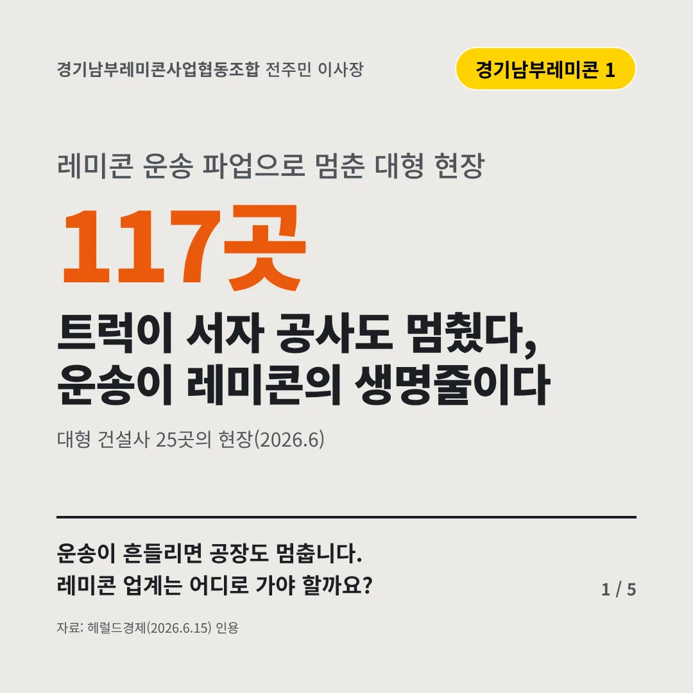
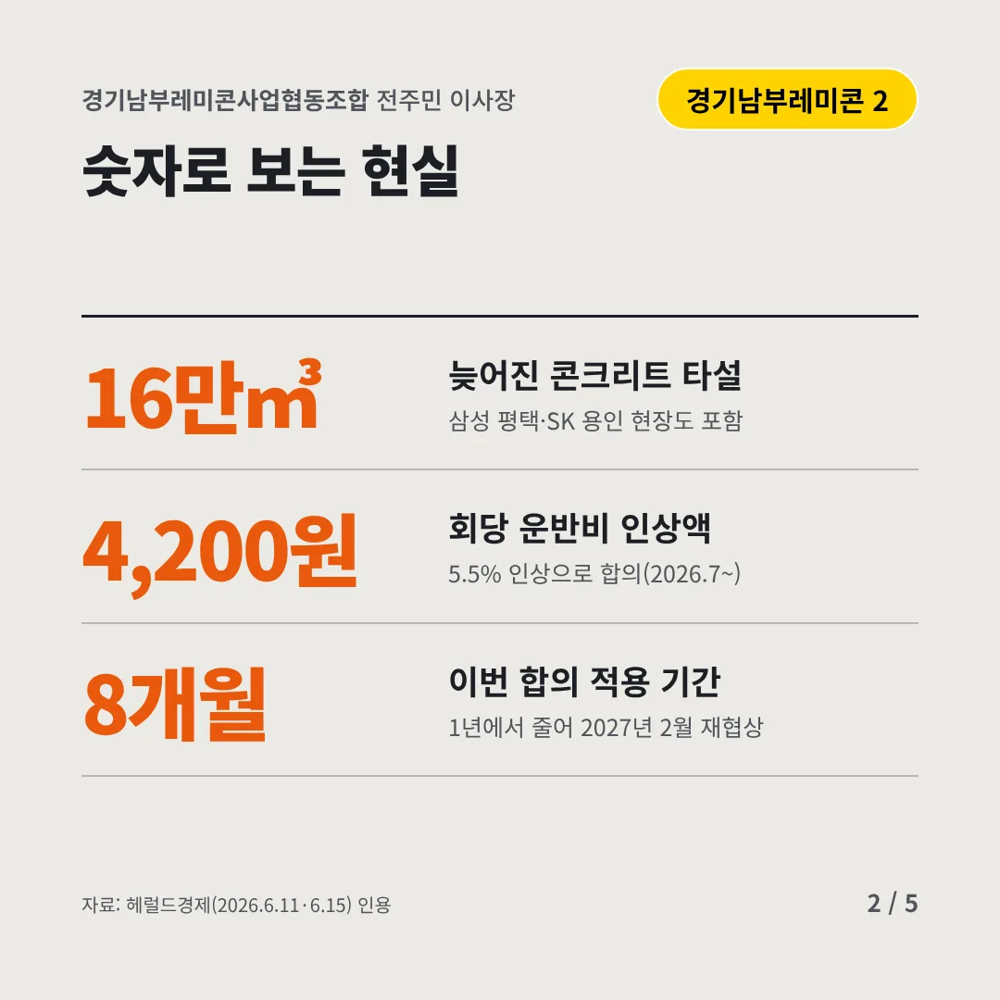
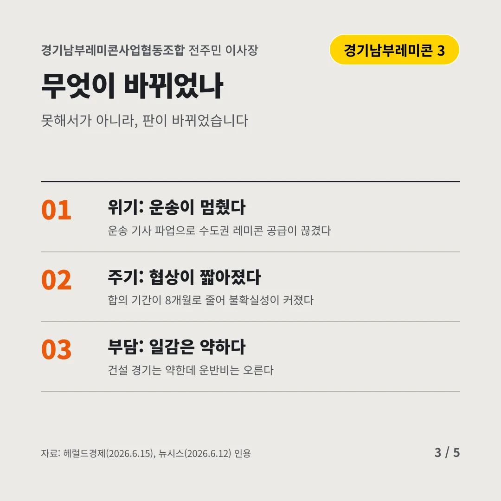
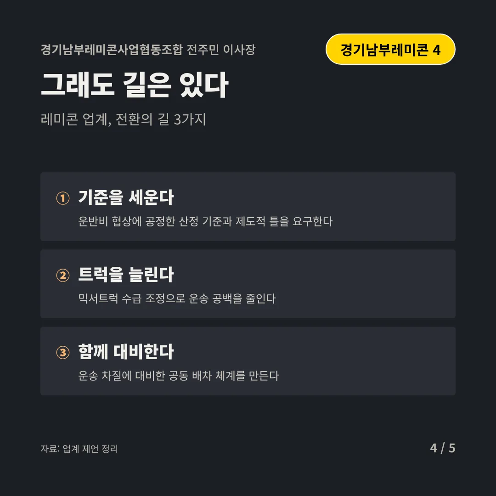
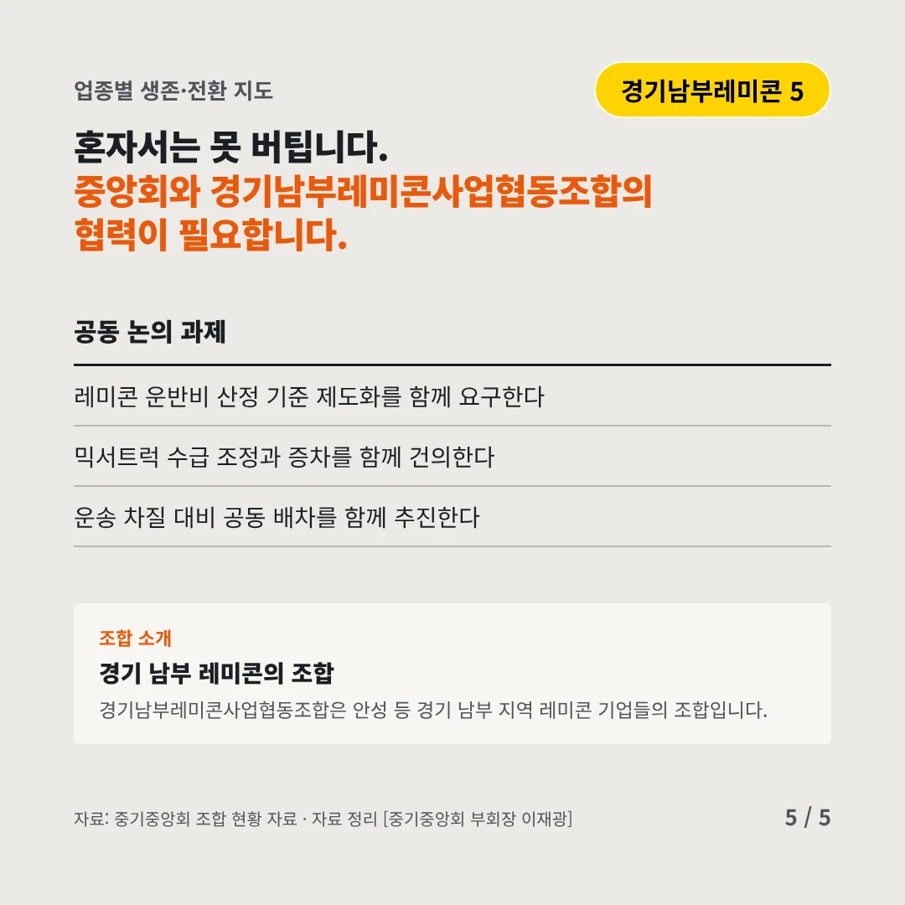
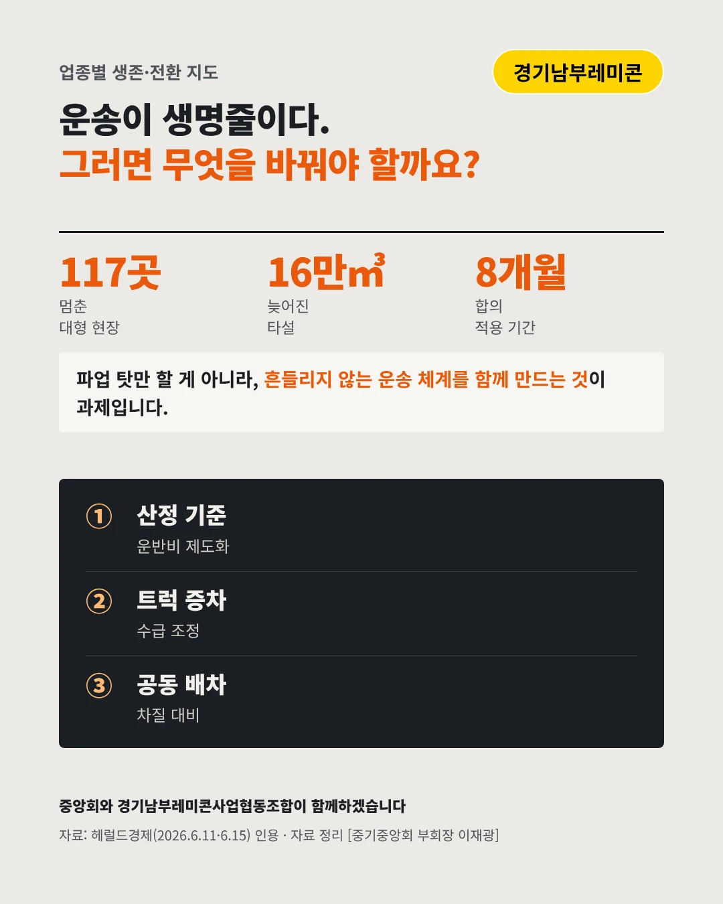

경기남부레미콘사업협동조합전주민 이사장
트럭이 서자 공사도 멈췄다, 운송이 레미콘의 생명줄이다
117곳 레미콘 운송 파업으로 멈춘 대형 현장






운송이 흔들리면 공장도 멈춥니다. 레미콘 업계는 어디로 가야 할까요?
숫자로 보는 현실
- 16만㎥늦어진 콘크리트 타설삼성 평택·SK 용인 현장도 포함
- 4,200원회당 운반비 인상액5.5% 인상으로 합의(2026.7~)
- 8개월이번 합의 적용 기간1년에서 줄어 2027년 2월 재협상
무엇이 바뀌었나
- 위기: 운송이 멈췄다운송 기사 파업으로 수도권 레미콘 공급이 끊겼다
- 주기: 협상이 짧아졌다합의 기간이 8개월로 줄어 불확실성이 커졌다
- 부담: 일감은 약하다건설 경기는 약한데 운반비는 오른다
그래도 길은 있다
- 기준을 세운다운반비 협상에 공정한 산정 기준과 제도적 틀을 요구한다
- 트럭을 늘린다믹서트럭 수급 조정으로 운송 공백을 줄인다
- 함께 대비한다운송 차질에 대비한 공동 배차 체계를 만든다
한 장 요약

조합 소개
경기남부레미콘사업협동조합은 안성 등 경기 남부 지역 레미콘 기업들의 조합입니다.
자료: 헤럴드경제(2026.6.15), 헤럴드경제(2026.6.11·6.15), 뉴시스(2026.6.12)